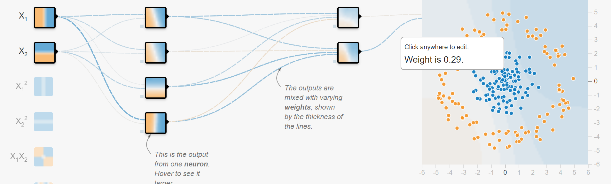

Educate, Visualize, Develop, Deploy with tensforflow.js
Why the Browser and Machine Learning are a perfect match
Magdeburger Developer Days, 2018
Oliver Zeigermann / @DJCordhose

- Bei Educate die Demos von der Webseite zeigen und damit erklären, was es tut.
- Muss bei js Konferenz eben auch Einführung in ML sein, sonst versteht keiner was
- Für Develop: Code wie bei hh.js.
- Intro: Was ist eigentlich Tensorflow?
- Mein App portieren: (https://twitter.com/nsthorat/status/979955896032755712)
- auch slider und so mit observablehq?
- Tensorflow Dev Summit, Tensorflow.js: https://youtu.be/YB-kfeNIPCE?list=PLQY2H8rRoyvxjVx3zfw4vA4cvlKogyLNN
- Auch Screenshots machen für Bilder
- Auch hier Bilder klauen
- https://js.tensorflow.org/
- https://github.com/tensorflow/tfjs
- Beispiel Sentiment Analysis: https://beta.observablehq.com/@jashkenas/sentiment-analysis-with-tensorflow-js
* Aus 2017_ml_browser_hhjs objectives met übernehmen?
* https://medium.com/tensorflow/introducing-tensorflow-js-machine-learning-in-javascript-bf3eab376db
* https://js.tensorflow.org/tutorials/
Educate
Auch die anderen coolen Beispiele zeigen
In Develop zeigen wie das im Browser geht, ohne Installation und nvidia GPU und Treiber. Slides Workshop übernehmen.
Unter Deploy zeigen wie das aus Keras geht und Pläne für Node GpU
Wait, but why?
Python and R are predominant
- Have a large and mature set of libs
- Are reasonably fast
- Use bindings to C/C++ or Fortran for speed and reuse
(I) Educate
Everyone can be educated, they just need a browser and internet
Concepts are much easier to grok when you can play around with them
Experiment to explore how machine learning works
Built using deeplearn.js (predecessor of tensorflow.js)

https://teachablemachine.withgoogle.com/
Tensorflow Playground
Where it all started - Playing with Neural Networks without any installation
Training a network

(II) Develop
Most obvious reason: JavaScript is the language you are most comfortable with
You just happen to develop for the browser
You are intrigued by how JavaScript development works
Core Concepts
It's all about matrix operations
const a = tf.tensor1d([1, 2, 3]);
const b = tf.scalar(2);
const result = a.add(b); // a is not modified, result is a new tensor
const data = await result.data();
console.log(data); // Float32Array([3, 4, 5]
Demo: Changing the Optimizer in a simple example
Getting an impression of how to code and how the turnaround cycle works
deeplearn.js
Full TypeScript ML library using browser GPU
https://pair-code.github.io/deeplearnjs
Includes full training mimicking TensorFlow and NumPy API https://research.googleblog.com/2017/08/harness-power-of-machine-learning-in.html
More Machine Learning with JavaScript
- ConvNetJS: Visual NN exploration for learning (t-SNE cluster exploration from same auhtor)
- Brain.js : simple and straing forward NN implementation
- synaptic.js: similar scope as Brain.js, a bit more active
- ml.js: generic low level libs for machine learning
Demo: deeplearn.js
Use all Browser features in combination with Machine Learning

https://pair-code.github.io/deeplearnjs/docs/tutorials/intro.html
(III) Deploy
JavaScript might be the only language around
because all you have is a browser
- you on your mobile phone
- AI in browser based game
- combination with interactive visualizations and other browser features (like audio and video)
- use any GPU
GPU?
Graphics Processing Unit, originally for graphics
GPUs are specialized on parallel matrix operations
For all real problems you will need very powerful GPUs
TensorFlow only supports NVIDIA GPUs
Tensorflow.js allows you to train and predict on any GPU
Wrapping Up
Browser based ML apps
- can make use of any GPU (not only CUDA)
- have highest reach due to zero installation
- can be easily integrated into existing Web Apps
- allow for best visualization
- are ideal for interactive learning
Machine Learning in the Browser, Minds Mastering Machines [M³], London 2017
Oliver Zeigermann / @DJCordhose
http://bit.ly/mcubed-js